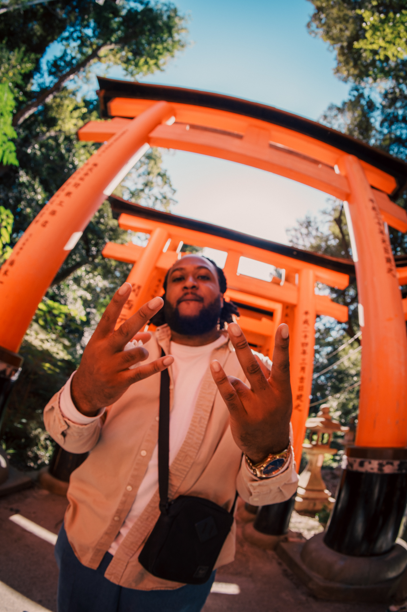

My name is Jamal Nwaubani. I love programming and finding out how technology works from the inside out! I love playing games, reading manga and watching anime. I am a nerd by day and a music junkie by night.
I am an artist that goes by the name of Leo Lotus. Singer, Songwriter and all out vibe creator, who loves to make different genres of music from Hip Hop to Pop to RnB.
With becoming an artist I have started to fall in love with traveling and have recently was able to check of Japan from my bucket list of places to visit.
